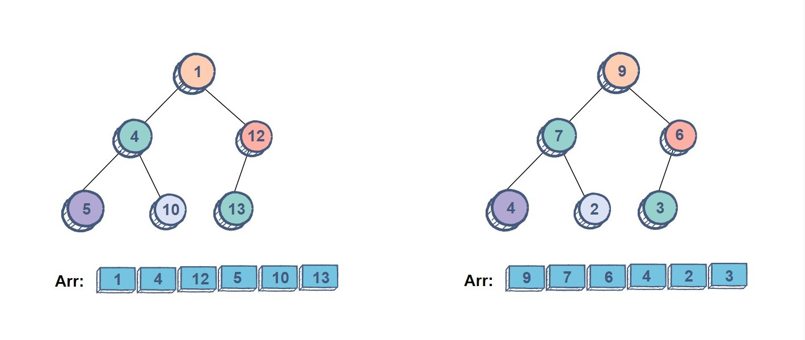

LFU cache
Data structure design, Heaps, Binary search, Binary search trees
Case study: A cache with a least recently used eviction policy
The goal here is to design a data structure that behaves kind of like a cache. The cache will have a capacity and an eviction policy based on the least recently used item. It will have an API for retrieving an object from the data structure via a key, and it will also have an API for adding a new key value pair to the data structure.
Two data structures/algorithms that will prove to be useful later on are Heaps & Binary search.
A binary heap is a "complete binary tree" such that for every node X in the tree, all other nodes under X are either larger or smaller than X. If every nodes under X are smaller, the heap is called a max heap, and if all nodes under X are larger, the heap becomes a min heap. This property is maintained regardless of wether an operation performed on the heap. This means the node with the smallest key will always be at the root of the heap. If the root is removed, then a new minimum will take its place. The details of how a heap maintains its structure when various behaviors are applied to it is highlighted here, and the implementation of a heap can be found here.
Binary search is a very powerful algorithm that is primarily used to efficiently search through sorted elements in a set. Due to the sorted nature of the elements, the algorithm, while searching for an item in the set, can deterministically eliminate half of the elements in every iteration. The algorithm divides the set into two, and based on some criteria, in this case comparing the target element to the pivot, it will disregard one half while continuing to sift through the other. This means it can go through all the elements of the array in logarithmic number of rounds with respect to the number of elements in the array. An implementation of binary search can be found here.
So, the goal is to essentially create a data structure that stores key value pairs. If the goal was to store key value pairs with no additional constraints, a hash table would be the best choice. However, what if the cache fills up? Some elements will need to be evicted to make space for any new additions. And the element that's evicted needs to be the least frequently used element (based on problem's description). So, whenever elements are queried, the data structure needs to update and keep track of the count of each element. This way when it comes to eviction, it just needs to find the element with the smallest count and then remove that element. This is where a heap may prove to be useful. A heap will always maintain its structure even when various operations are applied to it. So if the elements are stored in a min heap with the frequency of the elements being used to maintain the order of the nodes in the heap, it'll be easy to find which element has the minimum frequency at any point.
However, this approach presents its own problems. If the elements are only stored in a heap, then finding an element via its key will be very inefficient while finding its frequency will be optimized. So, maybe somehow combining hash tables & heaps together will produce a more desirable solution. For any key and value pair in the hash table, the value could point to the element in the heap. With this approach, retrieving an element using its key will be more efficient. Whenever an element is queried and its frequency is updated, the heap will rebalance itself to maintain its structure and adhere to its property. Adding a new key and value pair to the data structure will cost as much as adding a new item into the heap.
Another data structure that can be used to instead of a heap is a binary search tree. It can implement all the necessary behaviors in similar asymptotic time as that of a heap.
What if instead of using a heap to store the elements, an array is used? The bottleneck with this approach will be finding the element with the minimum frequency. But if the array is sorted, then the element with the smallest frequency will always be on one end of the array. The question then becomes how much would it cost to maintain the array's sorted order for every operation that modifies an element's frequency? Whenever an element's count is increased, it may need to be moved to a different location in the array for the array to maintain It's sorted order. However, the frequency of an element can only increase by 1 per query. This means swapping the element X with another element Y whose frequency is one more than X will be enough. In the best case, Y will just be next to X. In cases where there may be multiple elements with the same frequency as X, binary search can be used to find Y. Once X's new location is found, it can be swapped Y. Although the asymptotic runtime of the behaviors of the cache data structure implemented with this approach is similar to that of using a heap, in practice, this may before efficient especially in situations where the frequencies of the elements are distinct or uniformly distributed. The full implementation of an lfu cache implemented using a heap can be found here